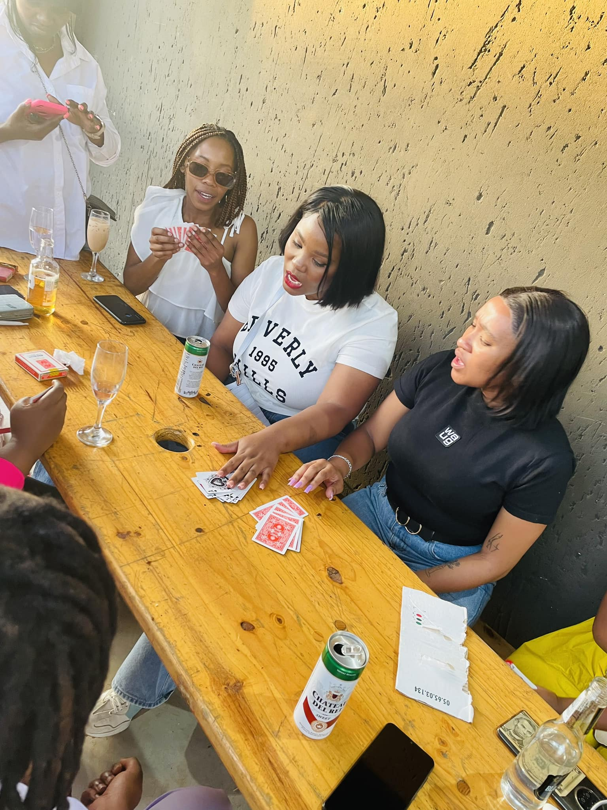
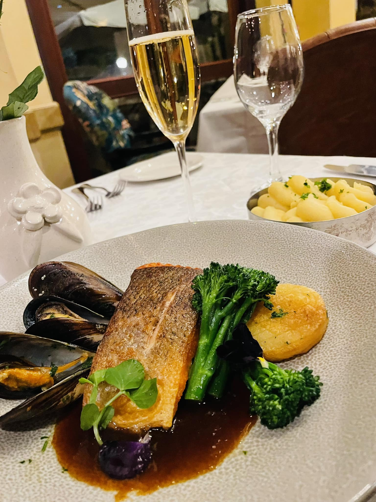

FMO Mission statement
Any topic is fair game, right? Women talk about anything and everything. They reveal their insecurities and discomforts, their latest work drama, marital troubles, school dilemmas, they discuss their fears and self doubts, their dreams, the list goes on. There is more to the age-old advice to just “talk it out” than there seems. Talking about life experiences makes it easier for one to break out of negative thought patterns. Women everywhere develop a positive relationship with how they look and how they speak, helping them raise their self-esteem and realise their full potential. Give yourself an endpoint. Not all conversations about problems need to lead to a plan of action for tangible change, but they do need to lead to something other than more complaining. Give yourself space to vent about your feelings and also, give yourself space to know more about your surroundings. No man is an island. Connect with people in a wide variety of functions, network. Remember, women’s empowerment comes from all sources, people, areas and perspectives. We are powered by the collective efforts of all. Friends of Mo is here for us to all share our life’s journey, yes it is filled with roadblocks, achievements and obstacles but we must savour every bit . Come, let us all talk about anything and everything! Patricia Molebogeng Dire.ACTIVITIES
- Bringing woman together.
- Provinding a safe place to express ourself without judgement.
- Forming new friend.
- Forming new connection.